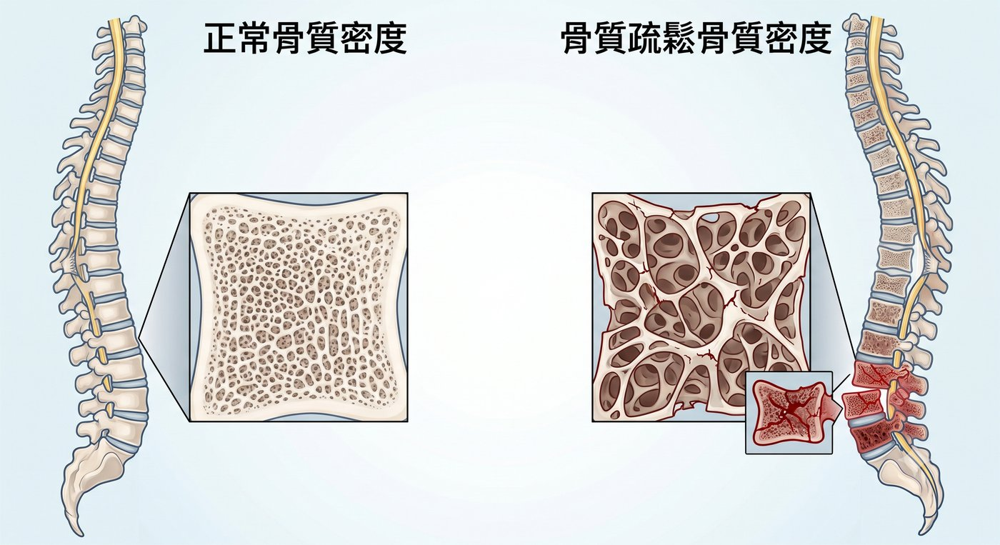
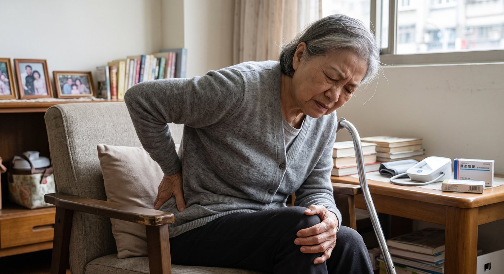

骨頭正在悄悄變空，您卻毫無感覺？別等骨折了，才發現骨質疏鬆。
您是否發現家中的長輩，近幾年身高慢慢變矮了？
或是背部越來越駝，稍微彎腰搬個東西、咳嗽一下，甚至只是輕輕跌坐在地上，就開始劇烈背痛、腰痛？
很多人以為骨質疏鬆只是「骨頭比較脆」，平常沒有疼痛，就不需要治療。

但骨質疏鬆最可怕的地方，是它常常沒有明顯症狀。
等到真的發生骨折，痛到無法翻身、起床、走路時，才發現骨頭早已變得像海綿一樣脆弱。
這種情況，就要小心可能不是單純閃到腰，而是骨質疏鬆造成的脊椎壓迫性骨折。
為什麼骨質疏鬆容易造成脊椎骨折？
骨質疏鬆不是單純「缺鈣」而已。
隨著年齡增長、女性停經後荷爾蒙變化、缺乏運動、營養不足，或長期使用某些藥物，骨質流失可能會越來越明顯。
當骨頭密度下降、結構變差，脊椎椎體就像被掏空的海綿，支撐力變弱。
這時候，不一定要嚴重跌倒才會骨折。
有些人只是彎腰撿東西、搬一點重物、抱孫子、坐車震動、用力咳嗽或打噴嚏，就可能造成脊椎壓迫性骨折。
一旦發生第一次脊椎骨折，脊椎受力結構可能改變，未來再次骨折的風險也會升高。
所以，骨質疏鬆不只是骨密度報告上的數字。
真正重要的是：它會不會讓您發生骨折。

哪些人需要特別注意？
如果您或家人有以下情況，建議儘早安排骨質疏鬆與骨折風險評估：
- 65 歲以上女性
- 70 歲以上男性
- 停經後女性
- 身高明顯變矮
- 駝背越來越明顯
- 曾經因輕微跌倒就骨折
- 父母曾有髖部或脊椎骨折病史
- 長期使用類固醇藥物
- 體重過輕、肌肉量不足
- 平時很少運動、很少曬太陽
- 有抽菸或過量飲酒習慣
骨質疏鬆常常沒有症狀。
與其等到骨折後才發現，不如提早知道自己的骨折風險。
什麼情況需要就醫評估？
如果出現以下情況，建議儘早由醫師評估：
- 輕微跌倒後出現明顯背痛或腰痛
- 彎腰、搬東西、咳嗽後突然背痛
- 痛到翻身、起床或走路困難
- 背痛持續數天以上沒有改善
- 身高明顯變矮
- 駝背越來越明顯
- 已知有骨質疏鬆，但沒有規則治療
一般 X 光可以看是否有椎體塌陷或壓迫性骨折。
如果要判斷骨折是不是新發生、是否仍有水腫疼痛，通常需要安排核磁共振檢查。
骨密度檢查，也就是 DXA / DEXA，可以幫助評估骨質疏鬆程度與未來骨折風險。
骨質疏鬆該怎麼治療？
骨質疏鬆是可以治療、也可以預防惡化的疾病。
但如果骨密度已經明顯不足，或曾經發生脊椎、髖部等脆弱性骨折，單靠吃鈣片通常是不夠的。
治療通常需要一起評估：
- 鈣質與維生素 D 是否足夠
- 是否需要骨質疏鬆藥物
- 是否有跌倒風險
- 肌力與平衡感是否下降
- 是否需要追蹤骨密度與骨折風險
有些患者需要減少骨質流失的藥物；有些嚴重骨質疏鬆或反覆骨折的患者，則需要評估促進骨生成的治療。
真正重要的不是只補鈣，而是依照您的骨密度、骨折病史、年齡、用藥狀況與整體風險，選擇適合的治療策略。
如果已經發生脊椎壓迫性骨折怎麼辦？
如果脊椎壓迫性骨折造成劇烈疼痛，已經影響翻身、起床、走路或日常生活，就需要進一步評估。
有些患者適合保守治療。
有些患者若疼痛持續、椎體塌陷明顯，或生活功能受到嚴重影響，則可以評估是否適合微創骨水泥、氣球撐開或椎體撐開固定等治療方式。
治療的目的不是只處理這一次骨折，而是：
- 減少疼痛
- 幫助恢復活動能力
- 避免長期臥床
- 治療骨質疏鬆
- 降低下一次骨折風險
骨折本身要處理，骨質疏鬆更要一起治療。
骨質疏鬆，不該等到骨折才開始重視
很多長輩直到脊椎骨折、痛到無法起身，才第一次知道自己有骨質疏鬆。
但如果已經出現身高變矮、駝背、反覆背痛，或曾經因輕微外力就骨折，就不要只是一直忍耐。
讓專業醫師協助您評估，找出骨折風險的真正原因，才能選擇最適合您的治療方式。
治療不是只為了這一次止痛，而是為了避免下一次骨折。
手術不是目的，重新回到生活才是目的。
把時間留給生活，不留給疼痛。